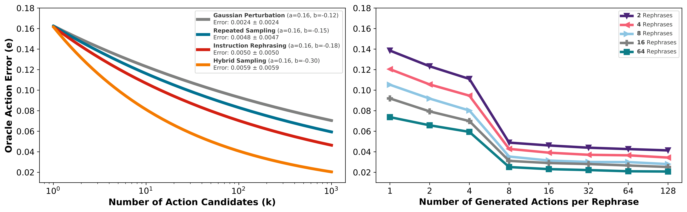
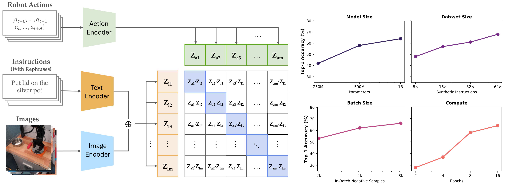
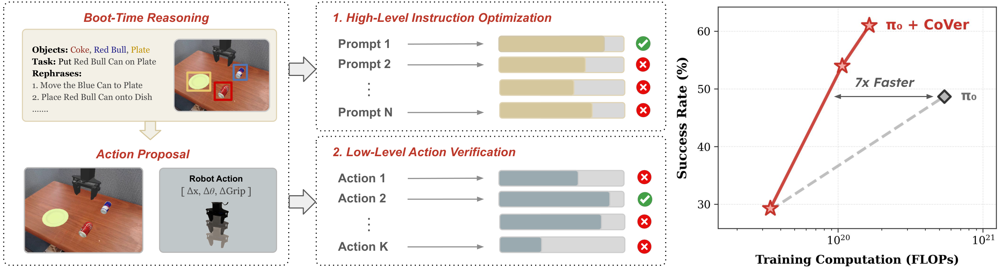
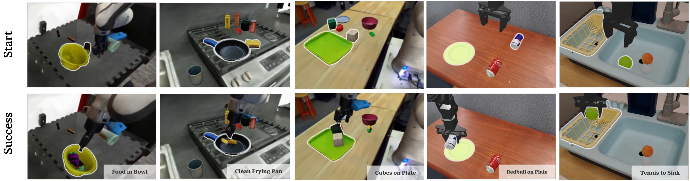
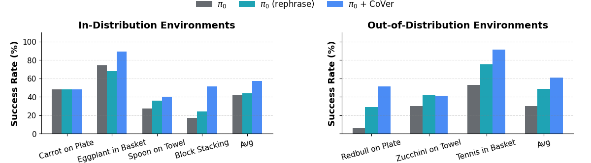
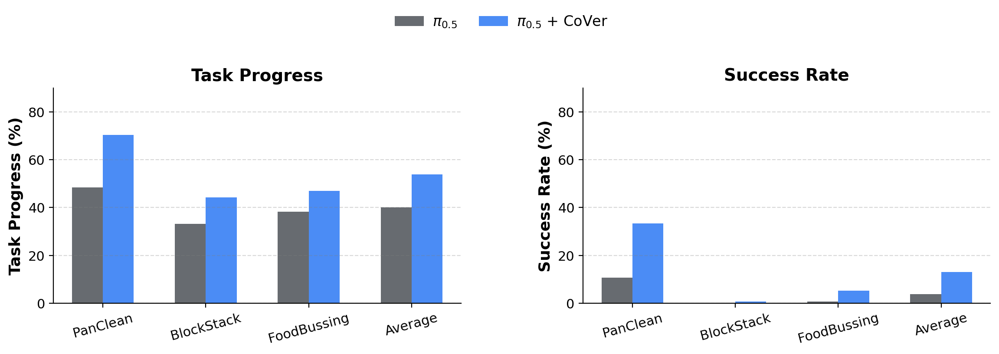

Example tasks across DROID and Bridge V2 environments.
Abstract
The long-standing vision of general-purpose robots hinges on their ability to understand and act upon natural language instructions. Vision-Language-Action (VLA) models have made remarkable progress toward this goal, yet their generated actions can still misalign with the given instructions. In this paper, we investigate test-time verification as a means to shrink the "intention-action gap". We first characterize the test-time scaling law for embodied instruction following and demonstrate that jointly scaling the number of rephrased instructions and generated actions greatly increases test-time sample diversity, often recovering correct actions more efficiently than scaling each dimension independently. To capitalize on these scaling laws, we present CoVer, a contrastive verifier for vision-language-action alignment, and show that our architecture scales gracefully with additional computational resources and data. We then introduce "boot-time compute" and a hierarchical verification inference pipeline for VLAs. At deployment, our framework precomputes a diverse set of rephrased instructions from a Vision-Language-Model (VLM), repeatedly generates action candidates for each instruction, and then uses a verifier to select the optimal high-level prompt and low-level action chunks. Compared to scaling policy pre-training on the same data, our verification approach yields 22% gains in-distribution and 13% out-of-distribution on the SIMPLER benchmark, with a further 45% improvement in real-world experiments. On the PolaRiS benchmark, CoVer achieves 14% gains in task progress and 9% in success rate.
Test-Time Scaling Law for Embodied Instruction Following

We show that instruction rephrasing produces a broader set of action candidates at test-time compared to repeatedly sampling actions from robot policies or applying Gaussian perturbations to a few sampled actions. Furthermore, a hybrid test-time scaling strategy that increases both the number of rephrases and the number of sampled actions per rephrase is more effective than either strategy alone.
The action error is defined as the Root Mean Squared Error (RMSE) between the ground-truth action and each sampled action. We characterize each sampling approach using a power law, where the logarithm of oracle action error e is a function of the number of action candidates k: log(e) ≈ log(a) + b · log(k), where a and b are fitted model parameters.
Approach
Stage 1: Training the Contrastive Verifier

To leverage these scaling laws, we introduce CoVer, a contrastive approach for verifying the alignment across vision, language, and action. Our architecture employs two key components: a text-aware visual encoder that selectively extracts task-relevant features, and an action encoder that captures long-range temporal dependencies within action chunks. The results show that scaling the number of synthetic instructions, model parameters, negative samples, and verifiers in an ensemble consistently improves verification and downstream retrieval accuracy of CoVer.
Stage 2: Hierarchical Test-Time Verification

Left: Given the initial observation and language instruction, a VLM performs structured reasoning over the scene and precomputes a set of rephrased instructions during boot time. At each step during deployment, our framework generates a batch of action candidates for each instruction using a VLA. Middle: CoVer then scores all instruction–action pairs and selects the optimal high-level instruction and low-level action chunk for execution. Right: Compared to prior work on scaling policy learning (π₀), our approach achieves stronger performance while requiring substantially less compute.
Experiments

① SIMPLER

CoVer yields 22% gains in-distribution and 13% out-of-distribution on the SIMPLER benchmark.
② PolaRiS

On the PolaRiS benchmark, CoVer achieves 14% gains in task progress and 9% in success rate.
③ Real-World

CoVer achieves 45% improvement in real-world experiments across two challenging tasks.